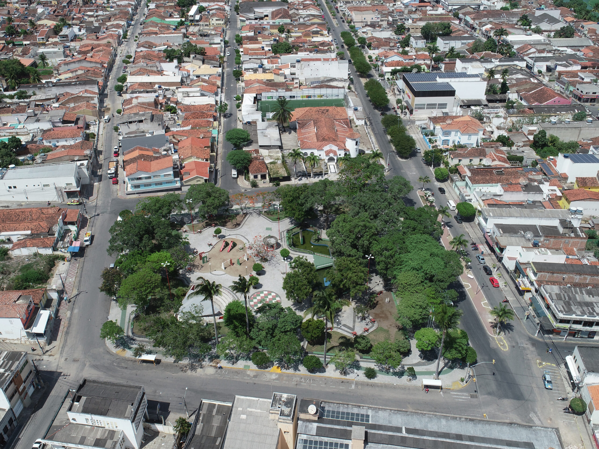

Praça da Bandeira
Localizada no núcleo urbano, é considerada a principal praça do município. Em sua entrada principal há um lago artificial com fonte. Com uma ponte larga em madeira e painel em mosaico. Conta com uma mini concha acústica com arquibancada. Possui todo seu passeio em pedras de granito, palmeiras imperiais e árvores de pequeno porte. Seu entorno é marcado por casas residenciais, algumas comerciais, Grande Hotel de Limoeiro e a antiga Rádio Jornal, onde hoje funciona a Secretaria de Cultura, Turismo e Lazer. Sua denominação surgiu a partir de projetos de vereadores em 07 de novembro de 1880. Atualmente conta com letreiro com nome da cidade que tornou-se um grande atrativo para toda comunidade. Fica a 1,0 km da sede da prefeitura municipal.